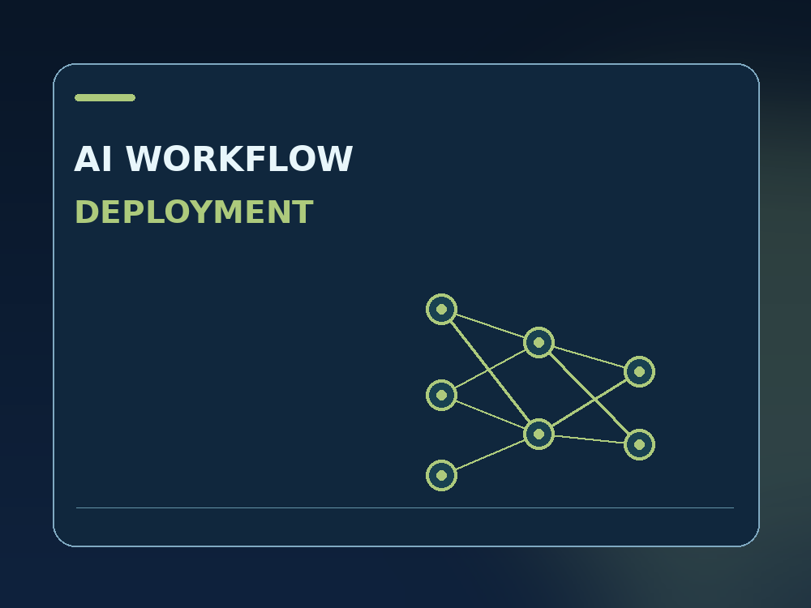

Deployment plan
$99
3 days estimated delivery
One agreed application, one Linux host. Check license, dependencies, compute and create an installation plan.
Deploy one named AI or transcription workflow with known versions, lawful model and data access, reproducible smoke tests and handover.
Discuss your requirements on Upwork ↗ Review working Rust demo ↗Published as a scope example. Prices are indicative, not yet live Upwork Project Catalog listings. Final contract terms are agreed on Upwork.

One agreed application, one Linux host. Check license, dependencies, compute and create an installation plan.
Install and smoke-test a single licensed application/workflow on one supported client-provided host.
One host and one workflow including service startup, limited logging/monitoring and a recovery runbook.
No guaranteed repair, third-party subscription, computing rental, emergency SLA or work beyond the agreed package. Platform fees and taxes, if any, are governed by Upwork terms.
Please remove credentials, API keys and customer data from logs. Use only an authorized and appropriately secure method for granting system access.
Confirm the application version, license, data rights and target environment.
Review dependencies, computing capacity and the rollback boundary.
Install the agreed workflow in a controlled environment if the tier includes it.
Run an approved smoke test and hand over the setup and recovery procedure.
The public Rust example demonstrates bounded, read-only checks. It is an owned lab demonstration—not a client reference, historical employer screenshot or full service result.
Read the Reproducible deployment guide ↗No. Scope covers a single specified application or workflow. Training and new feature development require separate scoping.
No. Accuracy depends on model and data quality; acceptance is based on the agreed technical smoke test.
No. Customer-provided hosting and third-party fees are separate.
Only when the customer demonstrates applicable lawful permission; unauthorized assets are excluded.
Send a short description, versions and a sanitized error sample. We can agree on a small first milestone through Upwork.
Contact through Upwork ↗